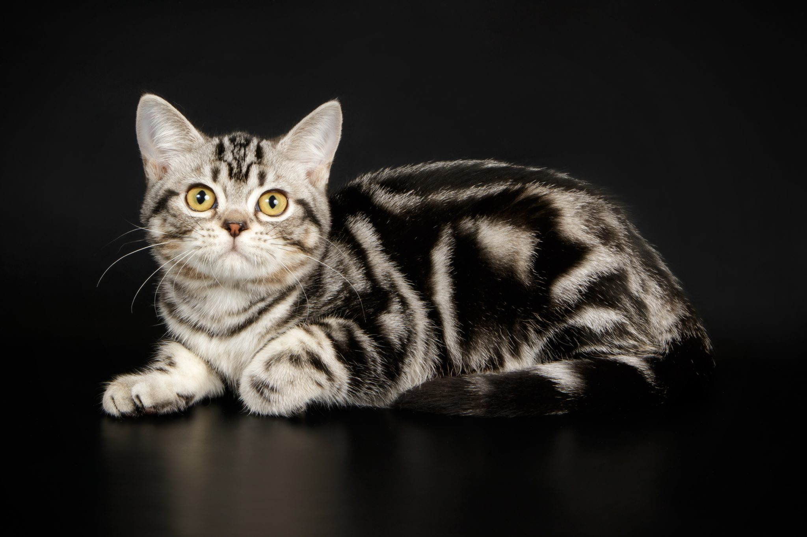

TODO: Transforme o texto "Voltar" abaixo em hiperlink que leva o usuário para a página com o sumário de todos os gatos
VoltarUma das principais doenças do American Shorthair acaba sendo a obesidade, pois é uma raça que não é muito ativa, preferem um colo, recebendo atenção e carinho, do que ficar correndo e brincando pela casa.
